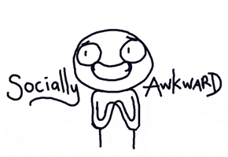
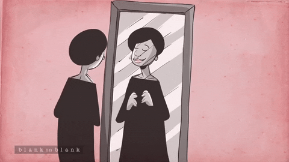

Hidayah's Universe
Home | About Me| My Family | Education | Photo & Video Land | Experience | My Things | Others | Contact
My Journey

My Life’s Journey
When I was 14 back then, I used to keeping myself from everyone cause something happened at that moment. It is quite personal so I would not type it in details. On mid-2014, I've used to have issues with mental health but I never told my family about it because I’m scared they would not believe me so I decide to keep it by myself. What I’m trying to deliver here is mental problems are not something that can be taken lightly because we never know what someone have been through in their life.
I used to think it is normal to keep myself in my room for entire time because it makes me feel better when I’m alone but I never realized that I have mental problem which is social anxiety. For me Social Anxiety is the excessive fear, dread and nervousness I experience in my relationships with other people. Especially people in authority and people I don’t know very well. It effects my self-esteem and my self-confidence. I feel very self-conscious and don’t feel at ease in social situations. I do really care what people think about me so from that I believe that is how I diagnosed by social anxiety.

I tend to sweat quite a lot in such situations and have a massive fear of blushing and I tend to avoid all situations where this may occur. I have a fear in social situations that I will draw attention to myself, make a fool of myself or that people will laugh at me. People might think that I was very nervous, boring, strange or unusual. It’s feeling different to other people when I’m around them. I am ill at ease around people that I don’t know and find the ordinary social situations that everybody encounters very difficult. These can range from going to the supermarket, job interview or something else.

For five years, social anxiety used to make me hide myself and never challenge myself to do something what I like or new things but once I decide to be brave enough to face that fear, it did change me a lot without I’m realized it. So what I can say from my experience is you have to decide whether you are going to face your fear or are you going to stay like that forever and that is my experiece as someone who has social anxiety disorder.
"Never Lose Yourself"
Copyright © copy 2020 All Right Reserved: Hidayah's Universe